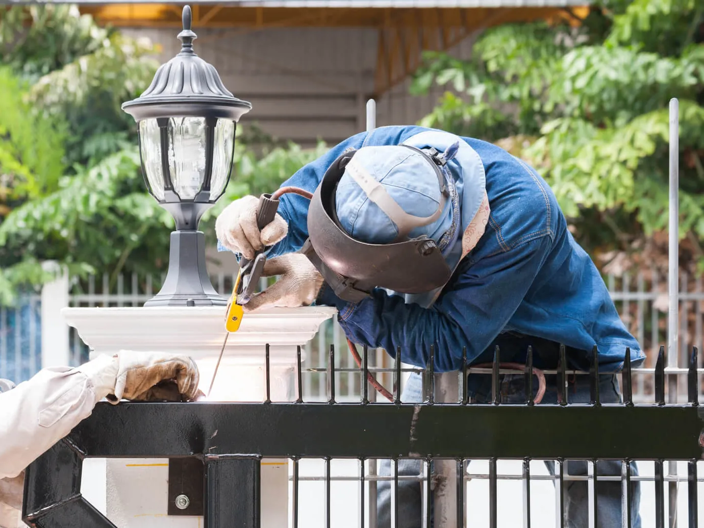

Home · Mobile Welding · Fence Welding
Fence Welding Services in New Orleans
At Big Easy Mobile Welders, we repair broken metal fences and fabricate custom fence panels right at your property in New Orleans. Our licensed, insured welders match the welding process to your fence material and leave every joint clean.

We come to the jobWhat Comes With Our Fence Welding Service in New Orleans?
Every fence welding job in New Orleans starts with a free look at the fence and a quote with no hidden fees. A licensed, insured welder then brings a fully equipped mobile unit to your property, matches the process to the fence metal, cleans and welds the damage, and walks the finished fence with you.
A Free Fence Assessment
We check the broken joints, loose pickets and rusted rails, then quote the work with transparent pricing. Nothing starts until you approve it.
A Process Matched to the Metal
Iron, steel and aluminum fences do not weld the same way. We adjust the process and the filler to whatever your fence is made of.
Welding at Your Fence Line
Our mobile unit parks at your property, so long panels never have to come down and travel to a shop.
Rust Removed First
Brushes and grinders take rust, old paint and scale off each joint before we strike an arc. Welds hold best on clean metal.
Joints Ground Smooth
Once a weld cools, we grind it back so the repair blends into the rail and is ready for primer and paint.
A Walk Along the Finished Fence
We show you every repair on the line and stay available for follow-up support after the job.

What Kinds of Fence Welding Work Do We Do in New Orleans?
Our fence welding work in New Orleans falls into four groups: repairing broken or rusted sections of an existing fence, fabricating custom fence panels, building a fence that matches your gate and home, and installing new welded fencing. Each one is done on site by the same licensed, insured welders.
Fence Welding Repair
Metal fences last a long time, but without upkeep the joints crack, pickets work loose and rails rust through. We weld broken pieces back together, replace damaged sections and give an older fence a retouch that extends its life.
Custom Fence Fabrication
We cut, fit and weld new panels to the height, spacing and style you choose. Custom work suits openings and layouts where a stock panel will not fit.
Fences Matched to Your Gate
We can customize a fence to match your gate and the exterior design of your home. The pickets and rails then carry one look from the gate along the whole run.
Wrought Iron Fence Installation
We install new wrought iron fencing and weld its joints on site. A welded joint has no bolt that can work loose over time.
Why Do Metal Fences in New Orleans Need Fence Welding Repairs So Often?
Metal fences in New Orleans need fence welding repairs often because humid, salty air rusts bare steel quickly, and storm winds, falling limbs and flying debris bend pickets and crack joints. Once rust gets into a weld or a cracked joint, the damage spreads along the rail unless it is cut out and welded.

Most fence repairs we see start small, at a single joint or a chipped patch of paint.
Rain and humidity reach bare metal wherever the paint has worn away. Rust that starts at a joint creeps into the weld and loosens the pickets around it.
Storms add bent posts and rails knocked out of line. Our guide to storm damage repair for bent fences, gates and railings covers the welding fixes for that kind of damage.
Why Is a Professional Better for Fence Welding in New Orleans?
A professional fence welder in New Orleans gets your property secured sooner, picks the right process and materials for your fence, and leaves joints that look clean along the whole line. Iron and steel fences take skill to weld neatly, and a trained welder brings the equipment to finish them smoothly.

Faster Installation and Repair
If you need your property secured soon, a welding pro gets the fence up or back together in a shorter period. We prepare the materials ahead of time so the work on site keeps moving.
A Fence That Looks Right
Every joint on a fence is on display, and neat welds take practice. A skilled welder leaves even beads and a smooth finish from one end of the run to the other.
The Right Material and Process
Welding rods and materials vary, and better ones last longer. We recommend what suits your fence and use the process its metal calls for.
How Does Fence Welding Work From Quote to Finish in New Orleans?
Fence welding in New Orleans moves from quote to finish in four steps. You send details or photos of the fence for a free estimate, we book a time that suits you, our welder repairs or builds the fence on site, and we walk the finished line with you before settling payment.
Tell Us About the Fence
Call or fill out our estimate form with the fence material, the damage and the length involved. Photos help us quote accurately.
Pick a Time That Works
Once you approve the quote, we schedule the visit for a time that suits you.
Weld It in Place
We prep each joint, weld the repair or the new section and grind the welds smooth.
Walk the Line Together
We go over the finished fence with you, settle payment the easy way and stay reachable afterward.
 The rig comes to you
The rig comes to you
How Much Does Fence Welding Cost in New Orleans?
Fence welding cost in New Orleans depends on the fence material, how many joints or sections need work, whether the job is a repair or custom fabrication, and whether the fence is painted afterward. Once we have seen the fence, the quote costs nothing, commits you to nothing and lists every charge up front.
The Fence Material
Wrought iron, steel and aluminum each take a different process and filler, which changes the time involved.
How Much Needs Welding
A few broken pickets take less work than a long run of rusted rails or several bent sections.
Repair or Custom Work
Mending an existing fence is priced differently from fabricating new panels to your design.
Painting After the Weld
Bare welds rust quickly in humid air, so primer and paint are often added, and they add to the total.
What Should You Know Before You Book Fence Welding in New Orleans?
Before booking fence welding in New Orleans, find out what metal the fence is made of, whether it is galvanized and how much of it is damaged. Also make sure the welder can reach both sides of the fence. Those details let us quote accurately and bring the right process and filler for your fence.
What the Fence Is Made Of
A magnet sticks to iron and most steel but not to aluminum, which is a quick way to tell them apart. If you are unsure, we will check during the estimate.
Whether It Is Galvanized
Many steel fences carry a zinc coating that needs attention before welding. Our guide on welding galvanized steel explains why it takes extra care.
Access Along the Fence Line
Clear plants, furniture and stored items from both sides of the damaged section. Keep pets inside and let us know where the mobile unit can park.
What Do Customers Say About Our Fence Welding Crew in New Orleans?
Homes and businesses across the area rate our mobile welders on fair prices, fast turnarounds and professional service. The New Orleans crew behind those reviews is the same one that repairs broken fence rails and fabricates new fence panels on site, so the welders who earned the feedback are the ones who arrive at your fence.
Big Easy Mobile Welders provide quality welding work at a reasonable price. They have been reliable and quick to respond whenever I've needed them, which has made it easy for me as their customer!
The guys from Big Easy Mobile Welders were great! They came to my house and welded two iron railings with a quick turnaround time, which was just what I needed. The quality of workmanship is top notch which made me a satisfied customer! If you need anything welded then these guys will be able to help out big time.
I can't recommend Big Easy Mobile Welders enough! They helped me out of a jam by welding our gate, and their work is amazing. The fast service combined with great quality made all the difference in getting things done quickly without any hassle for me. Thanks again, guys!
If you need a welder for any type of job, I highly recommend Big Easy Mobile Welders. The team did an amazing job on my home and business! They were professional from start to finish. Thankful that their work could help me get back up and running again sooner than expected.
I had the pleasure of working with Big Easy Mobile Welders this past week. They are not only professional and skilled, but also very affordable! I highly recommend them for any welding job you may need done on your property or vehicle. You won't regret using these guys as they do amazing work at a fair price 10/10 would do again!
What Other Welding Services Go Well With Fence Welding in New Orleans?
Fence welding in New Orleans pairs naturally with gate work, since most fences have a gate, and with iron railing repairs, pipe welding, window frame welding, specialized jobs and custom welding. Our welders handle each of these on site, so you can ask about several repairs in one visit.

Gate Welding
Gate repairs and custom gates in steel or aluminum, with materials and tools covered in your estimate.
View gate welding →
Iron Railing Welding
Custom indoor and outdoor railings for stairways, decks and balconies, built to fit your property.
View railing welding →
Pipe Welding
Pipe and pipeline repair on site, with stick and gas-shielded processes matched to the pipe.
View pipe welding →
Window Welding
Repairs for rusted and worn metal window frames, carried out at your home.
View window welding →
Specialized Mobile Welding
Repair work at your home or office and custom metal pieces, whatever the size of the project.
View specialized welding →
Custom Welding
Custom ironwork, estimated before we start so we arrive with the right equipment for the job.
View custom welding →
Where Can You Book a Free Fence Welding Estimate in New Orleans?
Booking a free fence welding estimate in New Orleans takes one call to (504) 370-2757 or a few minutes on our online estimate form. Share the fence material, the damage and roughly how long the affected section is, and our quote follows with no obligation and no hidden fees.
Loading the estimate form...
If it does not appear, call us at (504) 370-2757.

What Do Property Owners Ask About Fence Welding in New Orleans?
New Orleans property owners ask us plenty about fence welding: what wrought iron really is, how a metal fence gets repaired, what a new fence costs, how to paint one, which welding rod suits iron, how galvanized fences are welded, how a leaning fence on metal posts gets fixed and how to keep a dog inside.
What is a wrought iron fence?
A wrought iron fence is an ornamental metal fence made of pickets, rails and posts, often with scrollwork or pointed tops. True wrought iron is rarely produced today, so most fences sold under that name are mild steel, welded together and painted. Mild steel gives the same look but needs paint to resist rust.
How do you repair a metal fence?
Repairing a metal fence usually starts with cleaning rust and paint off the damaged area. Bent parts are straightened or cut out, broken pickets and rails are welded back or replaced with new metal, and the welds are ground smooth. The repair is then primed and painted so it matches and holds up against rust.
How much does a wrought iron fence cost?
The cost of a wrought iron fence depends on its length and height, the style of the pickets and panels, the number of gates and whether it is painted. Custom designs take more fabrication time than simple panels. We give a free, no-obligation quote once we have seen the property and the layout you want.
How do you paint a wrought iron fence?
Start by removing loose rust and flaking paint with a wire brush or grinder, then wipe the metal clean and let it dry. Apply a rust-inhibiting metal primer, followed by one or two coats of exterior paint made for metal. In humid New Orleans weather, touch up chips quickly before rust spreads under the paint.
What is the best welding rod for an iron fence?
Most iron fences are mild steel, and many welders use E6013 rods on light pickets and E7018 on heavier posts and rails. E6011 copes better with rusty or painted metal that cannot be cleaned fully. The right choice depends on thickness and position, so we pick the rod after seeing the fence.
Can you weld a galvanized steel fence?
Yes, galvanized steel can be welded, but the zinc coating burns off as fumes that should not be breathed. Welders usually grind the zinc away from the joint first and work with good ventilation. Afterward, the bare area is protected with a zinc-rich paint so the repair does not rust ahead of the rest of the fence.
How do you fix a leaning fence with metal posts?
A leaning metal fence usually comes from a post that has loosened in its footing or rusted through near the ground. The post is pushed back to plumb, braced and reset in fresh concrete. When the base has rusted away, a welder can cut out the weak section and weld in new steel before resetting it.
How do you keep a dog in a wrought iron fence?
Small dogs can slip between pickets, so many owners add welded wire mesh or extra pickets along the lower part of the fence. Gaps under the fence and the gate need closing too. A welder can attach extra pickets or a lower rail so the fix matches the fence and holds up over time.


Book Your Free Mobile Welding Estimate
Tell us what needs welding, and we will bring the rig to your door anywhere in the New Orleans area.